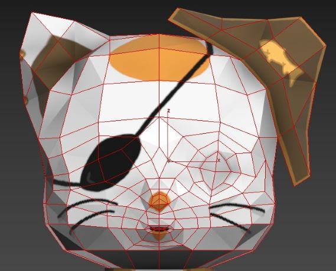
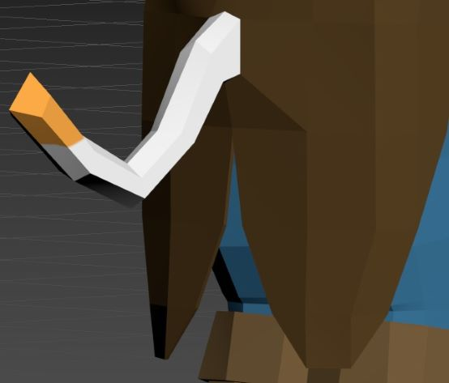
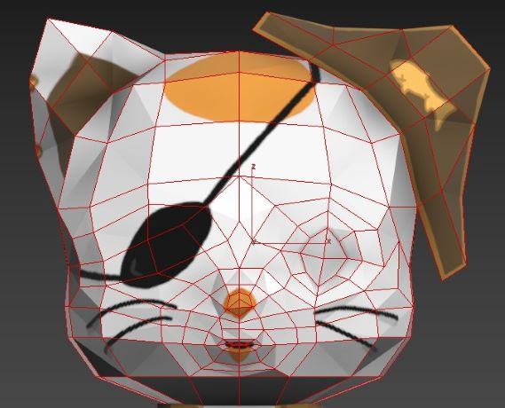
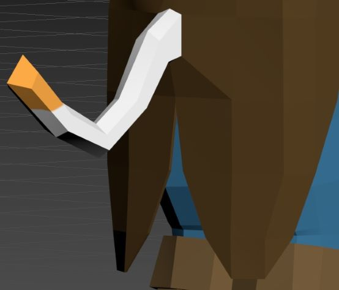
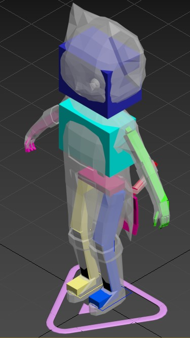
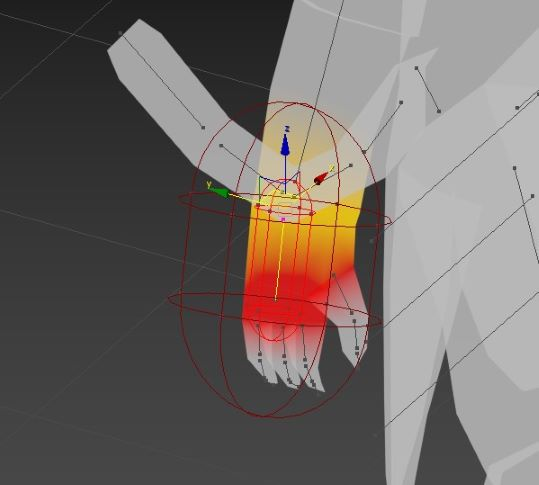
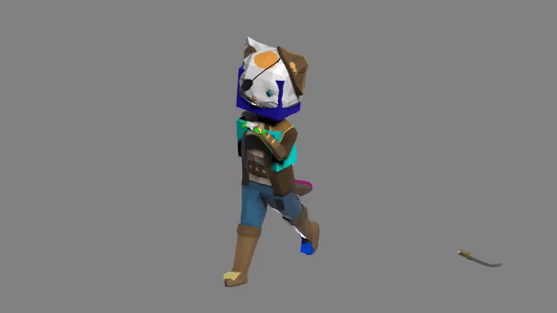
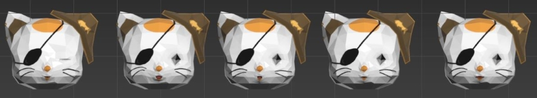
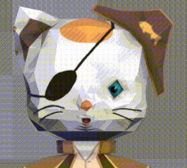

Proyect: The Captain Cat
Project proposed in the 3rd year of the
Videogames' Design and Development degree in the URJC
Objective:
Create the concept art of a free concept character. Make a low poly 3D model for it and animate it.
The student should follow this steps:
1- Draw a Concept of the caracter
2- Model a Low Poly caracter made of quads
3- Rig and Skin it using 3DSMax
4- Animate it using Mocap, direct and inverse animation
5- Animate the face using morphers
6- Build a scene for the character
7- Move the models to Unity
To ask about this project
Email: miniesdax@gmail.com
Character's Concept

Knowing that I had to animate the character, I decide using a pirate cat
as a reference to the
Jack Sparrow moves from Pirates of the Caribean
but with a cartoon, cat theme
Low Poly Model
 



I modeled and textured the character in 3DSMax
Also I modeled loops in the face so it would be easier to animate it.
I also added a tail to the cat and the back part of the suit
Rig and Skin
 Using a human rig provided by 3DSMax adding the tail and some bones
to animate the suit's back, rather than using a cloth modifier.
After adjusting the bones, I Skinned all the vertices to their respective bones
Mocap, Direct and Inverse animation
Using Mocap files, I made the running, walking, sitting and punching animations
after that I made a direct to indirect animation drawing and swinging a sword
Face animations
 To make the facial animations I used the Morpher modifier of 3DSMax
This modifier allows to add weights to your faces' vertices and make poses to all the
posible faces or words the character can make or talk